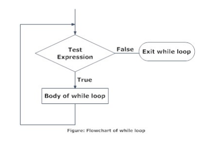
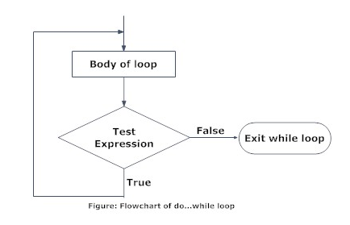

While and do-while loops
Java provides several kinds of loops for repeating a block of code while a certain condition is true. In this topic, we will learn about two kinds of loops: while and do-while. The difference between them is the order in which the body is executed and the condition is evaluated.
The while loop
In a while loop, the condition is tested first. The body is only executed if the condition is true, and then the process repeats. The basic syntax of this loop is the following:
while (condition) {
// do something in the body
}
 The body of the loop may contain any valid Java statements, including conditional statements and even other loops (nested loops). A loop becomes an infinite loop if the condition is always true. For example:
while (true) {
// infinite loop
}
We will talk more about using infinite loops in later topics.
Examples while
Example 1. The following loop prints consecutive integer numbers until reaching 5.
int i = 0;
while (i < 5) {
System.out.println(i);
i++;
}
The output:
0
1
2
3
4
Example 2. The following code prints the English alphabet in a single line.
public class WhileDemo {
public static void main(String[] args) {
char letter = 'A';
while (letter <= 'Z') {
System.out.print(letter);
letter++;
}
}
}
Here's what's happening: the program takes the first character, 'A', and then repeats:if letter is less than or equal to 'Z', the program goes to the loop body; inside the body, it prints the current value of letter and moves on to the next. The output:
ABCDEFGHIJKLMNOPQRSTUVWXYZ
Example 3. Loop to calculate the factorial of a number
Scanner in = new Scanner(System.in);
System.out.println("Introdueix un número");
int num = in.nextInt();
int fact = 1;
while (num > 0) {
fact = fact*num;
num--;
}
System.out.println("Factorial = " + fact);
The do-while loop
In a do-while loop, the body is executed first and only then is the condition statement tested. Therefore, the body will be always executed at least once.
The basic syntax of the loop is the following:
do {
// do something
} while (condition);

Examples do-while
Example 1. The program below keeps reading integer numbers from standard input and outputting them. If 0 is entered, the program outputs it and stops.
public class DoWhileDemo {
public static void main(String[] args) {
Scanner scanner = new Scanner(System.in);
int value;
do {
value = scanner.nextInt();
System.out.println(value);
} while (value > 0);
}
}
The input:
1 2 4 0 3
The output:
1
2
4
0
Example 2. Do-while loop to calculate the sum of the first X integers (where X is provided by the user)
Scanner in = new Scanner(System.in);
int sum = 0;
int num;
do {
System.out.println("Introdueix un número");
num = in.nextInt();
sum + = num;
} while (num != 0);
System.out.println("Suma = " + sum);
Note that a do-while loop may become infinite, just like a while loop.